CISPA Helmholtz Center for Information Security
under review
We decompose the Dice deficit of text-only prompting into five failure modes (hierarchical attribution: presence errors, then semantic mismatch, then mask quality; together they sum to 1 with Dice). Presence errors account for a substantial fraction of the loss: missed structures alone cost 0.419 Dice on ToothFairy2, 0.573 on MoCA-Mask and 0.447 on iSAID-5i. On RAOS and MRISegmenter, semantic mismatches (e.g. the left instead of the right femoral head) cost 0.102 and 0.109. Adding a single random click inside the target improves Dice on all six datasets: the knowledge is in the model, but text alone does not reach it.
Splitting the one-click result the same way shows which errors the click removes: mostly presence false negatives (−0.352 on MoCA-Mask, −0.291 on ToothFairy2, −0.269 on LVIS-92i, −0.222 on iSAID-5i), plus semantic mismatches on MRISegmenter (0.109 → 0.054) and RAOS (0.102 → 0.084). Presence false positives, on slices without the structure where no click is given, barely change.
| RAOS | ToothFairy2 | MRISeg. | MoCA-Mask | LVIS-92i | iSAID-5i | |
|---|---|---|---|---|---|---|
| Text prompt (Dice) | 0.553 | 0.016 | 0.463 | 0.351 | 0.545 | 0.389 |
| Presence FN | +0.045 | +0.419 | +0.085 | +0.573 | +0.352 | +0.447 |
| Presence FP | +0.180 | +0.404 | +0.248 | NA | NA | NA |
| Semantic mismatch | +0.102 | +0.036 | +0.109 | NA | +0.019 | +0.040 |
| FN area | +0.105 | +0.080 | +0.064 | +0.022 | +0.049 | +0.066 |
| FP area | +0.013 | +0.045 | +0.029 | +0.053 | +0.036 | +0.058 |
| Cross-modal guidance (text + 1 click) | 0.595±.013 | 0.202±.012 | 0.562±.015 | 0.636±.059 | 0.771±.049 | 0.568±.079 |
| Dice lost with text + 1 click (change vs. text prompt) | ||||||
| Presence FN | +0.017 (−.028) | +0.128 (−.291) | +0.034 (−.051) | +0.221 (−.352) | +0.082 (−.269) | +0.225 (−.222) |
| Presence FP | +0.180 (−.001) | +0.396 (−.008) | +0.242 (−.006) | NA | NA | NA |
| Semantic mismatch | +0.084 (−.019) | +0.062 (+.026) | +0.054 (−.056) | NA | +0.026 (+.008) | +0.050 (+.010) |
| FN area | +0.112 (+.007) | +0.186 (+.106) | +0.075 (+.011) | +0.061 (+.039) | +0.065 (+.017) | +0.087 (+.021) |
| FP area | +0.012 (−.002) | +0.026 (−.019) | +0.033 (+.004) | +0.082 (+.029) | +0.055 (+.019) | +0.070 (+.012) |
FN/FP: false-negative/positive; NA: not applicable. Cross-modal guidance is averaged over three random clicks (± standard deviation). Its split uses the same per-volume / per-video / per-episode / per-pair aggregation as the text row, averaged over the three clicks (each click's rows sum to 1; the split varies by at most 0.008 between clicks). Medical: a click is given only on slices that contain the structure, text alone elsewhere. Medical datasets: Medical-SAM3; others: SAM3.
CMAS transfers the corrective effect of spatial guidance to text-only prompting. From a few annotated examples it extracts cross-modal steering vectors from the activation changes induced by corrective clicks, and applies them to the frozen model, without requiring spatial guidance at inference time.
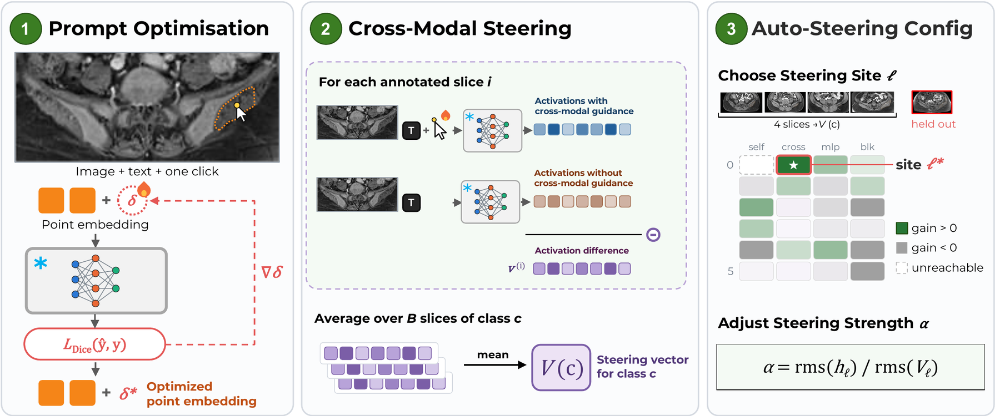
| RAOS | ToothFairy2 | MRISegmenter | MoCA-Mask | LVIS-92i | iSAID-5i | |
|---|---|---|---|---|---|---|
| Default (text prompt) | 0.553 | 0.016 | 0.463 | 0.351 | 0.545 | 0.389 |
| Prompt learning | ||||||
| Geometry embedding | 0.627↑ | 0.163↑ | 0.462 | 0.351 | 0.548 | 0.403↑ |
| FS-CPL | 0.626↑ | 0.113↑ | 0.487↑ | 0.392 | 0.441↓ | 0.278↓ |
| M2C | 0.570↑ | 0.236↑ | 0.458 | 0.563↑ | 0.740↑ | 0.673↑ |
| Reference-based | ||||||
| PerSAM (original) | 0.425↓ | 0.109↑ | 0.453 | 0.379 | 0.642↑ | 0.539↑ |
| PerSAM (enhanced) | 0.548↓ | 0.101↑ | 0.493↑ | 0.395 | 0.637↑ | 0.521↑ |
| Fine-tuning | ||||||
| LoRA | 0.593↑ | 0.287↑ | 0.490↑ | 0.639↑ | 0.755↑ | 0.721↑ |
| Re-scoring | ||||||
| Global threshold | 0.520↓ | 0.031↑ | 0.435↓ | 0.267↓ | 0.602↑ | 0.435↑ |
| Per-class threshold | 0.531↓ | 0.035↑ | 0.434↓ | 0.267↓ | 0.606↑ | 0.436↑ |
| PrAda | 0.641↑ | 0.062↑ | 0.534↑ | 0.634↑ | 0.388↓ | 0.219↓ |
| Steering | ||||||
| Intra-modal steering | 0.630↑ | 0.131↑ | 0.434↓ | 0.557↑ | 0.580↑ | 0.488↑ |
| CMAS (ours) | 0.642↑ | 0.132↑ | 0.513↑ | 0.622↑ | 0.657↑ | 0.523↑ |
| Hybrid | ||||||
| LoRA + CMAS | 0.634↑ | 0.291↑ | 0.507↑ | 0.638↑ | 0.759↑ | 0.718↑ |
| PrAda + CMAS | 0.658↑ | 0.117↑ | 0.549↑ | 0.625↑ | 0.454↓ | 0.222↓ |
Dice, five annotated images per class (paper, main comparison table). Medical datasets: Medical-SAM3; others: SAM3. Bold: best, underlined: second best. ↑/↓: significantly better/worse than the text prompt (paired Wilcoxon, p<0.05). LoRA and M2C are stronger on the natural-image datasets, which do not require the model to refrain from predictions; on the medical volumes, where a class is absent from many slices, CMAS is competitive without updating weights, and combining it with PrAda gives the best RAOS and MRISegmenter results.
The same five-way split of the Dice deficit, for text-only prompting and three adaptation methods (five annotated images per class). On the natural-image datasets, CMAS primarily reduces missed objects: presence FN drops from 0.573 to 0.089 on MoCA-Mask, from 0.352 to 0.165 on LVIS-92i and from 0.447 to 0.242 on iSAID-5i. On RAOS the largest improvement comes from fewer semantic mismatches (0.102 → 0.045), mostly left/right confusions such as the femoral heads. Correcting one failure mode can introduce another: on ToothFairy2, newly found structures are often assigned to the wrong tooth (semantic mismatch 0.036 → 0.157), as with LoRA (0.178) and M2C (0.187).
LoRA removes almost all missed objects but adds false-positive presence predictions on the medical volumes (RAOS 0.180 → 0.227, MRISegmenter 0.248 → 0.366, vs. 0.259 with CMAS). M2C behaves like LoRA, except on MoCA-Mask, where it still misses many objects (presence FN 0.274). Hover a segment for its value and its change vs. the text prompt.
| RAOS | ToothFairy2 | MRISeg. | ||||||||||
|---|---|---|---|---|---|---|---|---|---|---|---|---|
| Text | CMAS | LoRA | M2C | Text | CMAS | LoRA | M2C | Text | CMAS | LoRA | M2C | |
| Dice | 0.553 | 0.642 | 0.593 | 0.570 | 0.016 | 0.132 | 0.287 | 0.236 | 0.464 | 0.513 | 0.490 | 0.458 |
| Presence FN | 0.045 | 0.031 | 0.014 | 0.018 | 0.419 | 0.269 | 0.035 | 0.047 | 0.085 | 0.055 | 0.021 | 0.031 |
| Presence FP | 0.180 | 0.181 | 0.227 | 0.272 | 0.404 | 0.353 | 0.457 | 0.459 | 0.248 | 0.259 | 0.366 | 0.340 |
| Semantic mismatch | 0.102 | 0.045 | 0.056 | 0.044 | 0.036 | 0.157 | 0.178 | 0.187 | 0.109 | 0.076 | 0.045 | 0.084 |
| FN area | 0.105 | 0.085 | 0.089 | 0.080 | 0.080 | 0.055 | 0.027 | 0.040 | 0.064 | 0.064 | 0.055 | 0.063 |
| FP area | 0.013 | 0.015 | 0.020 | 0.016 | 0.045 | 0.033 | 0.016 | 0.030 | 0.029 | 0.032 | 0.023 | 0.023 |
| MoCA-Mask | LVIS-92i | iSAID-5i | ||||||||||
|---|---|---|---|---|---|---|---|---|---|---|---|---|
| Text | CMAS | LoRA | M2C | Text | CMAS | LoRA | M2C | Text | CMAS | LoRA | M2C | |
| Dice | 0.351 | 0.622 | 0.639 | 0.563 | 0.545 | 0.657 | 0.755 | 0.740 | 0.389 | 0.523 | 0.721 | 0.673 |
| Presence FN | 0.573 | 0.089 | 0.100 | 0.274 | 0.352 | 0.165 | 0.029 | 0.065 | 0.447 | 0.242 | 0.009 | 0.060 |
| Semantic mismatch | NA | NA | NA | NA | 0.019 | 0.044 | 0.045 | 0.037 | 0.040 | 0.071 | 0.068 | 0.062 |
| FN area | 0.022 | 0.143 | 0.088 | 0.060 | 0.049 | 0.061 | 0.081 | 0.085 | 0.066 | 0.084 | 0.148 | 0.132 |
| FP area | 0.053 | 0.147 | 0.174 | 0.103 | 0.035 | 0.073 | 0.090 | 0.073 | 0.058 | 0.080 | 0.054 | 0.073 |
Dice and the Dice lost to each failure mode (lower is better); each column sums to 1 (up to rounding). NA: not applicable (natural images: the class is present in every frame or query, so no presence FP; MoCA-Mask has one class, so no semantic mismatch). The medical text-prompt Dice is the per-volume split mean (MRISegmenter 0.464 vs. 0.463 in the main table, rounding). Medical datasets: Medical-SAM3; others: SAM3.
Test Dice for 3 to 20 annotated examples per class. CMAS is competitive with only three examples; PrAda + CMAS is best on RAOS, and LoRA is strong on MoCA-Mask. Hover or tab through a budget to compare all methods; click a legend entry to hide or show it.
| RAOS (annotated volumes; official Dice, 67 test volumes) | 3 | 5 | 7 | 10 | 20 |
|---|---|---|---|---|---|
| Default (text prompt) | 0.553 | 0.553 | 0.553 | 0.553 | 0.553 |
| LoRA | 0.598 | 0.593 | 0.601 | 0.594 | 0.581 |
| PrAda | 0.617 | 0.641 | 0.645 | 0.637 | 0.653 |
| CMAS (ours) | 0.636 | 0.642 | 0.642 | 0.647 | 0.647 |
| LoRA + CMAS | 0.602 | 0.634 | 0.622 | 0.584 | 0.602 |
| PrAda + CMAS | 0.619 | 0.658 | 0.664 | 0.670 | 0.671 |
| MoCA-Mask (annotated frames; video-average Dice@0.5, 16 test videos) | 3 | 5 | 7 | 10 | 20 |
|---|---|---|---|---|---|
| Default (text prompt) | 0.351 | 0.351 | 0.351 | 0.351 | 0.351 |
| LoRA | 0.614 | 0.639 | 0.646 | 0.689 | 0.662 |
| PrAda | 0.538 | 0.634 | 0.634 | 0.640 | 0.650 |
| CMAS (ours) | 0.613 | 0.622 | 0.611 | 0.628 | 0.634 |
| LoRA + CMAS | 0.585 | 0.638 | 0.608 | 0.686 | 0.520 |
| PrAda + CMAS | 0.608 | 0.625 | 0.631 | 0.656 | 0.673 |
Dashed lines with hollow markers: hybrids. Dotted line: text-only default. Medical: Medical-SAM3; MoCA-Mask: SAM3.
CMAS and PrAda improve different organs. CMAS gives larger gains on the gallbladder (+0.075 vs. +0.010) and the rectum (+0.048 vs. −0.004); PrAda does better on the prostate (+0.080 vs. +0.018) and the esophagus (+0.073 vs. +0.006). Their combination keeps the large gains on the femoral heads and further improves the bladder (+0.170), although the gains on the gallbladder and rectum are lost; the colon is the only organ where it clearly falls below the text prompt (−0.042). Overall RAOS Dice: text 0.553, CMAS 0.642, PrAda 0.641, PrAda + CMAS 0.658 (five annotated volumes). Hover or tab through an organ for all values; click a legend entry to hide or show it.
| Organ (sorted by CMAS gain) | Text prompt | CMAS (ours) | PrAda | PrAda + CMAS |
|---|
Per-organ mean official Dice over the 67 RAOS test volumes, five annotated volumes per class; in brackets the gain over the text prompt. Medical-SAM3.
Few-shot adaptation improves present classes at the cost of predicting absent ones. With challenging negative prompts, LoRA keeps only 16.3% correct empty predictions on iSAID-5i; CMAS retains 84.5% (LVIS-92i) and 78.6% (iSAID-5i).
| LVIS present | present (top-1) | absent | iSAID present | present (top-1) | absent | |
|---|---|---|---|---|---|---|
| M2C | 81.3 | 81.8 | 54.9 | 69.9 | 74.4 | 48.0 |
| LoRA | 83.9 | 84.0 | 36.6 | 80.3 | 80.3 | 16.3 |
| CMAS | 79.2 | 83.7 | 84.5 | 46.4 | 64.3 | 78.6 |
In %. Top-1: Dice when keeping the highest-scoring mask even below the confidence threshold. Absent: correct empty predictions.
Steering vectors derived from text guidance improve click-only inference on five of six datasets, e.g. ToothFairy2 +10.9 and RAOS +5.3 Dice points. MoCA-Mask is the exception (−6.7): there, even oracle text guidance does not help click-only inference.
| Click-only | RAOS | TF2 | MRISeg. | MoCA | LVIS | iSAID |
|---|---|---|---|---|---|---|
| Default | 0.692 | 0.375 | 0.640 | 0.659 | 0.679 | 0.562 |
| CMAS | 0.745 | 0.484 | 0.680 | 0.592 | 0.697 | 0.593 |
| Δ | +0.053 | +0.109 | +0.040 | −0.067 | +0.018 | +0.031 |
CMAS can build its vectors from clicks without any ground-truth masks. With a single click per support image it improves five of six datasets, by up to 19.8 Dice points, and recovers up to 83% of the gain of oracle clicks at test time, while inference stays text-only.
| Text-only inference | RAOS | TF2 | MRISeg. | MoCA | LVIS | iSAID |
|---|---|---|---|---|---|---|
| Text prompt | 0.553 | 0.016 | 0.463 | 0.351 | 0.545 | 0.389 |
| CMAS, 1 click/image | 0.552 | 0.063 | 0.486 | 0.549 | 0.676 | 0.537 |
| CMAS, 5 clicks/image | 0.568 | 0.120 | 0.435 | 0.583 | 0.686 | 0.585 |
Mean of three random click draws (the paper also gives standard deviations and the oracle).
Three clicks on one slice or frame of a new volume or video give a case-specific steering vector for the remaining slices/frames, with no prior adaptation data: Dice improves on all four volume/video datasets.
| Dice | RAOS | TF2 | MRISeg. | MoCA |
|---|---|---|---|---|
| Text prompt | 0.553 | 0.016 | 0.463 | 0.351 |
| Test-time CMAS | 0.587 | 0.201 | 0.517 | 0.573 |
Beyond SAM3-based models, CMAS also improves GLEE: MoCA-Mask 0.167 → 0.287, LVIS-92i 0.544 → 0.576, iSAID-5i 0.122 → 0.394.
With few supports, Auto-Steering's leave-one-out estimate can be noisy: with five clicks per support image instead of masks, CMAS reaches only 0.435 Dice on MRISegmenter, below text-only prompting (0.463). Cross-modal steering only helps when the extra modality helps (MoCA-Mask, text → click). The vectors come from positive clicks and target missed structures; they do not explicitly suppress false positives. The examples below include such failures.
Each viewer shows ground truth | text-only | text + CMAS side by side (slice slider, overlay opacity, outline mode, per-class Dice; medical cases add a coronal view and linked 3D surface meshes). Everything runs offline in the browser; pages are 0.2–12 MB. Medical and MoCA-Mask cases use the paper's saved test predictions; the LVIS-92i / iSAID-5i pages use the released code and steering packs.
Selection. Cases are selected to illustrate typical fixes, not to represent the average gain; averages are in the paper (table above). Every domain also has a failure case, and the random galleries are unfiltered seeded samples within the released classes.
CT, MRI and dental CBCT test volumes: axial/coronal slices, per-class 3D Dice, linked 3D surface meshes.
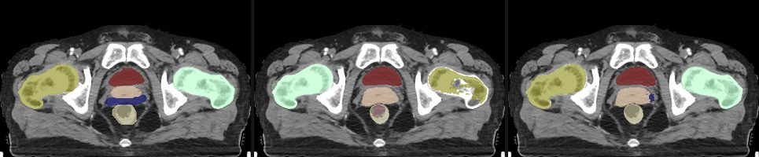
Left/right confusion of the femoral heads fixed (0.00 / 0.02 → 0.90 / 0.81).
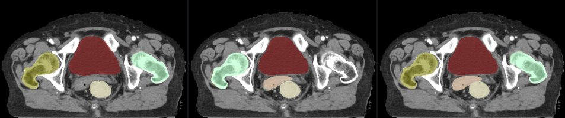
A median case: femoral heads 0.00 / 0.11 → 0.76 / 0.77; false positives on absent classes remain.
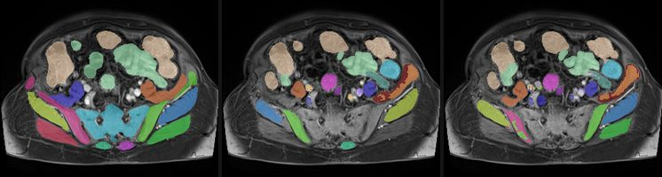
Missed pelvic muscles and hips recovered (≈0 → 0.50–0.75).
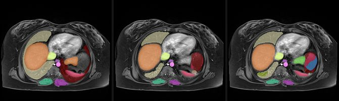
Failure: portal vein worse (0.41 → 0.28); CMAS adds false positives on absent classes.
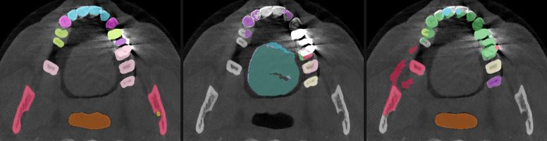
Near-empty text-only output; pharynx (0.12 → 0.92) and lower jawbone (0.00 → 0.45) recovered.
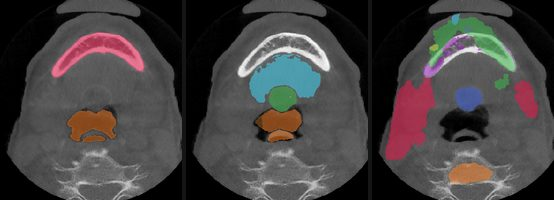
Failure: pharynx lost (0.46 → 0.00); upper jawbone stays near 0 (0.10).
Every annotated frame segmented independently with the prompt “animal”; play button and per-frame Dice.
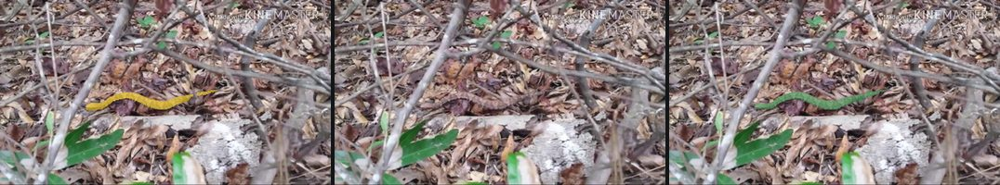
Camouflaged snake missed by text-only on most frames.
Text-only never finds the spider; CMAS does on most frames.
A moderate gain, closer to the dataset average.
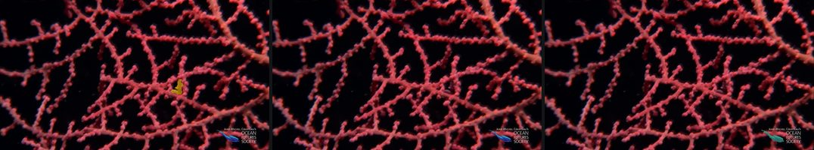
Failure: the seahorse stays missed with and without CMAS.
Random galleries (incl. absent-class prompts) and the queries where text-only SAM3 returns nothing.
22 random queries + 10 absent-class images of 5 classes. Includes failures: 3 queries stay or become empty, 0 get worse.
16 queries selected because text-only output is empty; 15 recovered by CMAS, 1 stay empty.
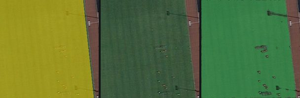
24 random queries + 6 absent-class images of 3 classes. Includes failures: 13 queries stay or become empty, 4 get worse.
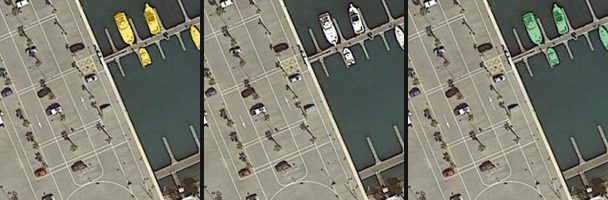
12 queries selected because text-only output is empty; 11 recovered by CMAS, 1 stay empty.
The reverse direction (paper Supplement S4.3): vectors from extra text guidance added to click-only inference, no class name at test time. Panels: ground truth, click only, click + CMAS, text + click; the same click in every panel.
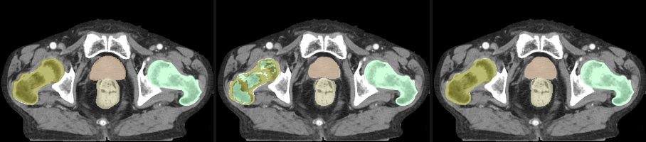
Median case. Text + click swaps the femoral heads (0.29 / 0.17); click + CMAS keeps both on the correct side (0.89 / 0.90).
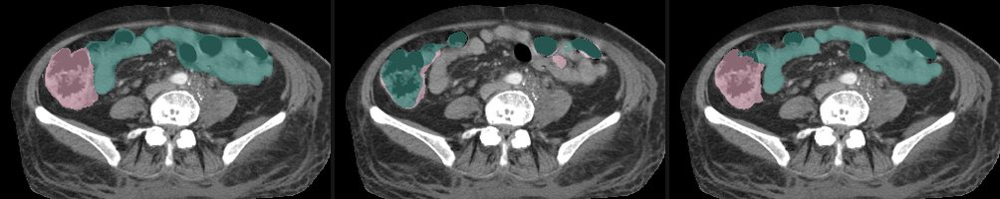
Failure: the vector makes this volume worse (pancreas 0.72 → 0.40, left femoral head 0.84 → 0.63).
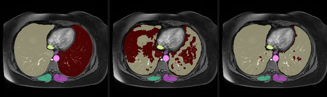
Median case. Back muscles and lungs gain with the vector; text + click stays ahead on this dataset.
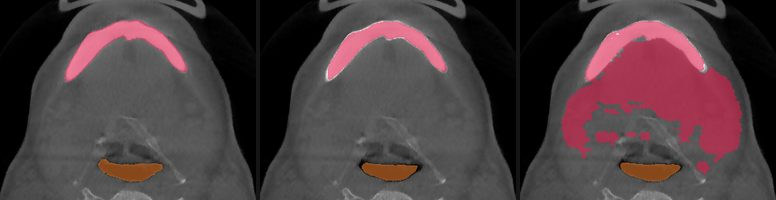
Lower jawbone recovered with the vector (0.44 → 0.75); upper jawbone lost (0.51 → 0.00).
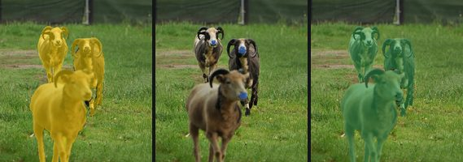
Stratified sample: 8 pairs the vector improves, 4 it worsens (dataset ratio 262 : 140), plus a histogram of all changes. Dataset: click 0.679 → 0.697.
Stratified sample: 8 pairs the vector improves, 4 it worsens (dataset ratio 1730 : 970), plus a histogram of all changes. Dataset: click 0.562 → 0.593.
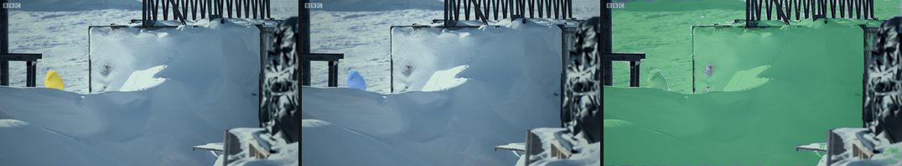
Failure: the vector adds large wrong regions (arctic fox 0.92 → 0.58); dataset 0.659 → 0.592. Three videos incl. the largest gain.
Diagnostics of what CMAS steers towards (test data, not used for any selection).
The code release includes a Gradio demo for SAM3 (images and videos) and Medical-SAM3 (3D CT / MRI / CBCT volumes): build a steering pack from a few annotated examples, apply it with text-only prompts, adapt a single case from a few clicks, or steer click-only inference with text. Code on GitHub.
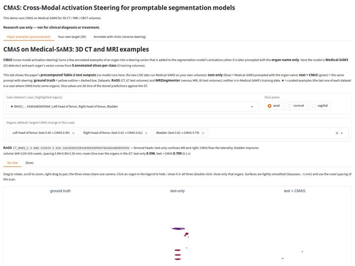
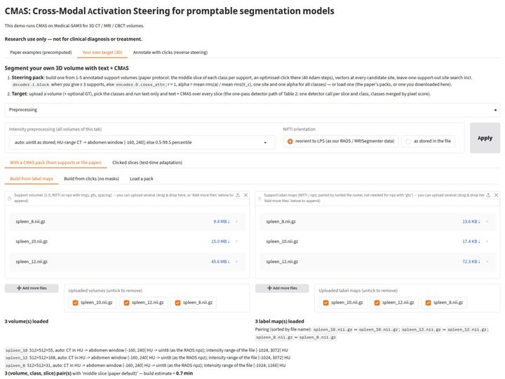
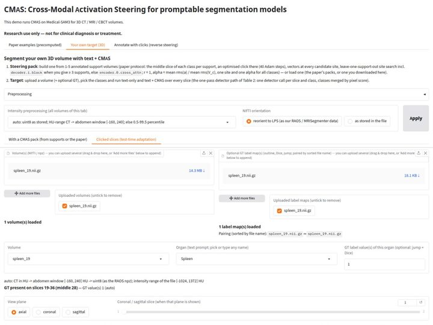
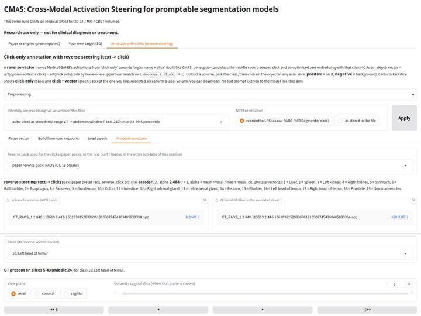
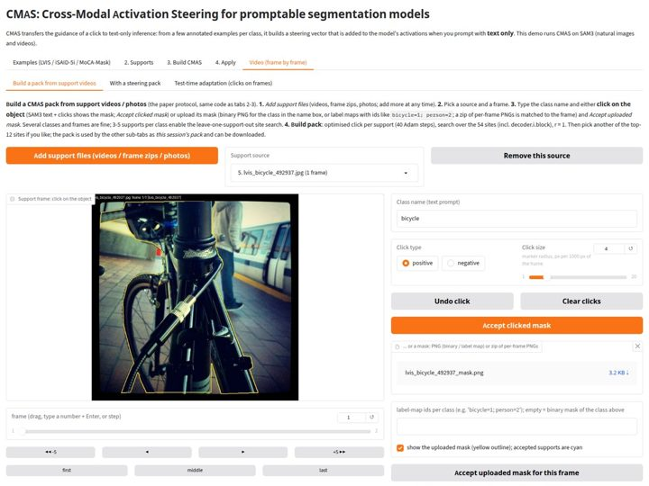
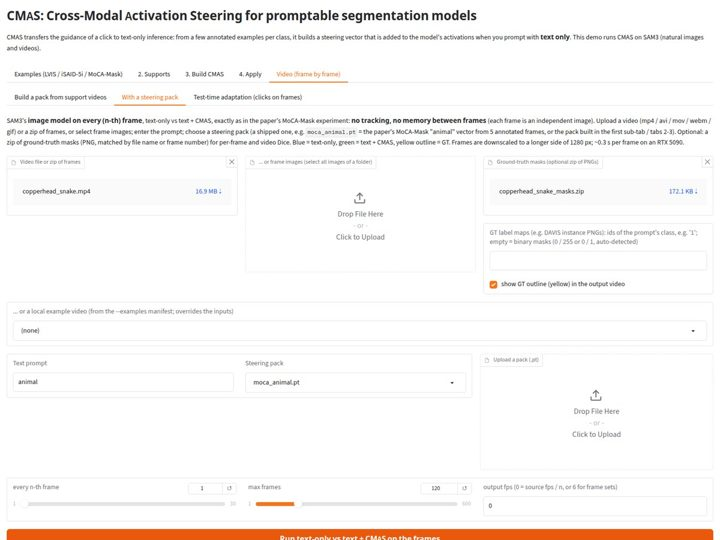
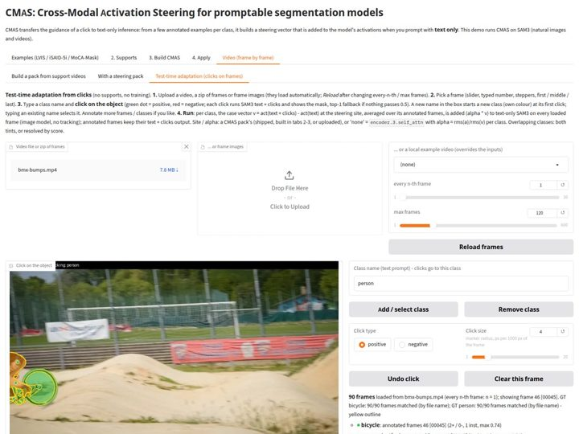
@article{zhaksylyk2026cmas,
title = {Steering to the Point: Cross-Modal Activation Steering for
Few-Shot Adaptation of Promptable Segmentation Models},
author = {Zhaksylyk, Nuren and Christmann, Philipp and Fritz, Mario},
journal = {arXiv preprint arXiv:XXXX.XXXXX},
year = {2026}
}